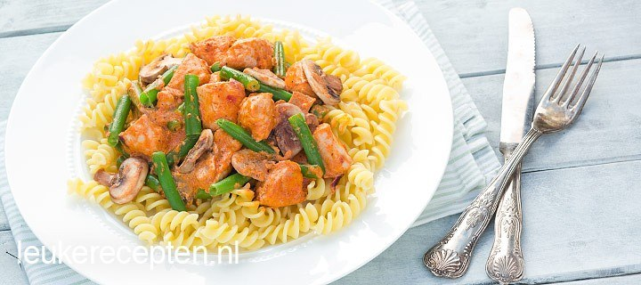

Pasta met kip en rode pesto

ingredienten
- 350 gr kip, in blokjes
- 125 ml creme fraiche
- 1 rode ui, gesneden
- 250 gr sperziebonen
- 4 eetl rode pesto
- Zout en peper
- 250 gr champignons, gesneden
- 1 teentje knoflook
- 1 eetl olijfolie
- Paar druppels tabasco (optioneel)
- 400 gr pasta
bereiding
- Kook de pasta volgens de algemene bereidingswijze op de verpakking. Kook de sperziebonen in ongeveer 6
minuten beetgaar.
- Verhit ondertussen de olie in een pan en bak hierin de kip, knoflook en ui goudbruin. Bak daarna de
champignons nog 3 minuten mee.
- Bestrooi de kip en groente met een beetje peper en zout. Voeg eventueel naar smaak een paar druppels tabasco
toe om het gerecht wat pittiger te maken.
- Schep vervolgens de boontjes, creme fraiche en rode pesto door de kip. Serveer de saus over de pasta.